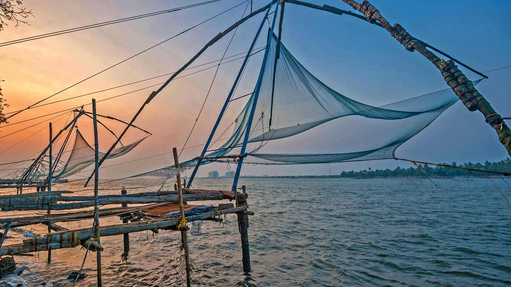

Alappuzha, also known as Alleppey is the picture-perfect place known for its beautiful backwaters and the houseboats offering overnight stays. The coastline of Alappuzha offers some of the best beaches in Kerala with water sports during the dry season.
There are plenty of houseboats, homestays, and rejuvenating Ayurvedic resorts that make staying in Alleppey brilliant. The houseboats pass through the serene backwaters, where you can catch glimpses of green paddy fields, choir-making activities, beautiful avifauna, and witness the life of locals in Kerala.
The longest Lake in India and the largest lake in Kerala, the Vembanad Lake is known by the name Punnamada Lake in Alleppey. The lake covers an area of 2033.02 sq km, making the largest wetland system in India. The lake enjoys rich biodiversity and is home to several marine, bird and animal species. The lake is also home to the annual snake boat racing which must be witnessed.
Located almost 11 kilometers from Alleppey, Marari Beach is famous for its Ayurvedic centers and stylish beach resorts. The Shoreline is covered with long rows of coconut trees and is a great place to tie a hammock and spend the afternoon beside the clean and calm waters.
Giving Alleppey the moniker ‘The Venice of the East’, Kerala backwater canals attract thousands of tourists to Alleppey each year. The snake boat races and the houseboat cruises are a must do activity in Alleppey. Owing to its rich bird and marine life, the backwaters are the best place to try some extravagant seafood.